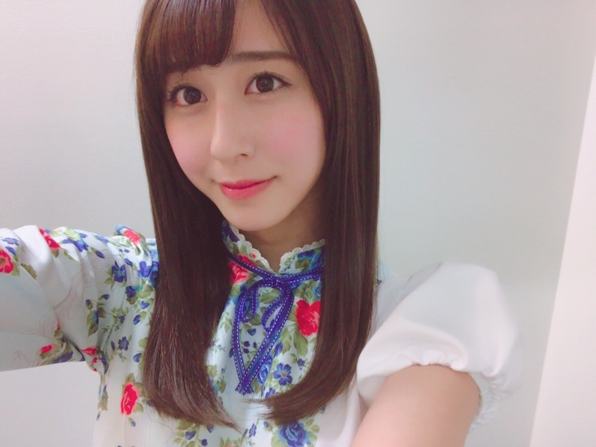

| 2017/04 04 Tue | 伸び伸び |
ちはるーむへようこそ
今日のちはるーむではさくらと桜の良さについて永遠と語り合っていました。
今日は沖縄県誕生の日。
あんぱんの日。
明治12年に琉球藩を廃し沖縄県とすることが布告され誕生日した日だそうです。
沖縄の雰囲気や人々の温かさが大好きです。
明治天皇が水戸邸の下屋敷に訪れたこの日に、初めて木村屋のあんぱんが出された。
今までとは違う純日本製のパンを出したらどうかというアイデアからできたそう。
パンを和菓子に用いようと考えた木村屋木村さんの侍従は天才ですね！

！ChihAnswer！
 うじけさん
うじけさん
・ちーちゃんは大切なものをどう保管していますか？
→私はオシャレなお菓子の箱や
服やアクセサリーを買った時の箱や
プレゼントボックスなど
飛びっきり気に入った箱の中に
大切に保管します。
でも逆に毎日でも見たいものは
棚に置いていますよ！
ソルティおやじさん
・斎藤リボンのリボンは本当に本物を、ちーちゃんが回してるの？
→個人PVのリボンは
全部私が実際に回していますよ！
何度も絡まる事もあったけど
外で目一杯、伸び伸びと
リボンを回せる機会なんて無いので
これでもかってくらい回してました◎
通行人の方々に少し変な目で
見られて恥ずかしかったけど...笑
ひたさん
・どこでも写真撮りに行けるとしたらどこに行きたい？
→やっぱり一生に一度、
必ず行ってみたいのはウユニ塩湖かなぁ。
湖に映るオーロラを見てみたい。
あとはヨーロッパの街並みや
地中海の近くのお家、
エジプトのピラミッド！！
シュネー1より各機、槍を放てさん
・花見はどこに行きたいですか？
→「世界不思議発見」の番組の中で
紹介されていた、
青森にある「弘前公園」には
是非この季節行ってみたい！！
弘前城の近くのお堀沿いに
桜がびっしり植えられているんだけど
桜の木を若返らせる技術のおかげで
普通の桜よりもより多く蕾をつけるの。
だから桜が散ってお堀に桜の花びらが
びっしりと埋まったとしてもまだ、
桜の木には満開のお花が咲いているの。
皆さん調べてみてください！！
かいとなつさん
・バナナマンさんに直接言われて嬉しかったエピソードってありますか？
→去年グアムに行った時に
日村さんとたまたま少しだけ
お話しする時間があって、
その時に「ちはるちゃんゴルフやってるんだって？」
って話しかけてくださった事！
ゴルフやっていた事を覚えていてくださって
しかもちはるちゃんって呼んでくださった
事が何よりも嬉しくて
些細な会話でしたけど今でも覚えています◎
ウッドストックさん
・今回の白い制服、好きな方を着ているのかな？年長、年少で分けていないような...
→好きな方ではないですよ！
選抜、アンダー、3期生のそれぞれの中で
年長組と年少組を何となくで
分けていると思います。
ただ、真夏が年少組のリボンがいい！
と軽い気持ちで言ったら
本当にリボンになった、という話は
聞きましたが٩(◦`~´◦)۶笑笑
絶対この疑問持った原因は
真夏だと思う！！笑
今日はここまで〜
皆さんいつもありがとうございます☺︎
------------------------------------------------♡
♬ ChihaMusic
「さくらのうた」KANA-BOONさん
私がKANA-BOONさんの中でも
一二を争うくらいに好きな、
桜ソング。
漢字ver.よりもこっちの方が好きかも！
伝えたいけど
伝えられないもどかしい気持ちや
懐かしくて寂しい気持ち。
この美しくも儚い感じが
桜にぴったりで素敵です。
"でもね、二人でみたあのさくらは今年も綺麗に咲いているんだよ
だから戻っておいでよ、僕だけのさくらの花よ。"
この歌詞が大好き。
桜っていいなあ
前髪伸び伸びショット。
伸びるの早くて困ってる...
コメントを見ていたら
昨日のアイシングのことを、
スポーツ後の体を冷やすアイシングの方だと
思ってびっくりしたよ！！
って方が多くて、
こちらもびっくりしましたヽ(；；)丿
驚かせてしまってごめんなさいね〜(> <)
おやすみ
斎藤ちはる
コメント(231)
2017/04/04 23:58